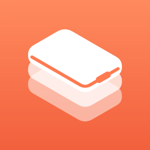

Pouches
A packing list that gets better every trip.
Support
Questions, problems, or ideas? Email pouchesapp@gmail.com
I already have a list. Do I have to retype it?
Nope! Copy it from Notes or anywhere else and paste it into New Item. Each line becomes an item, and a line like “Clothes:” starts a section.
How do I reuse a trip?
On the Trips list, swipe right on the trip and tap Duplicate. For trips you reuse often, tap Pin instead: they stay at the top, and you can pick them in Start From when you add a trip.
How does Didn’t Use work?
After a trip, swipe right on anything you didn’t need. When you duplicate that trip or start from it, those items say “Unused last trip” until you pack or delete them.
My trips aren’t on my other device.
Check that both devices use the same Apple Account, and that iCloud is on for Pouches in Settings › your name › iCloud.
I deleted a trip by mistake.
It’s safe in Recently Deleted, the last row of the Trips list, for 30 days. Open it and tap Recover.
Can I export my trips?
Yes. On the Trips list, tap the More button (⋯), then Export Trips. That saves every trip to one file, Trips.pouch, which you can bring back with Import Trips or by tapping the file. Duplicates are skipped. It’s plain JSON, so other apps and scripts can read it too. See the file format.
Privacy Policy
Pouches has no ads and doesn’t collect or share any data.
Your trips are stored on your device and, if iCloud is on, in your iCloud account.
They stay until you delete them, in the app or in your iCloud settings.